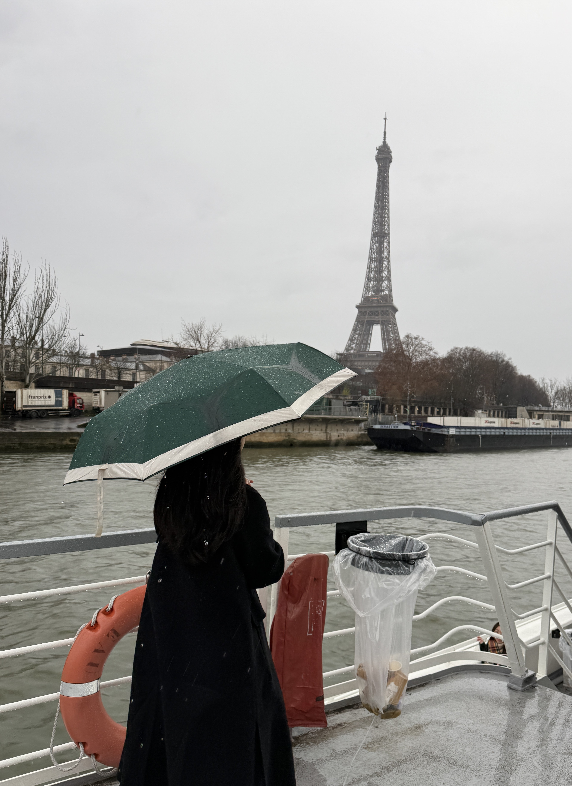

지역 및 정량 기록
사건 타이틀
"사색의 한 줄"
실제 마주했던 사색적인 우중 여행의 순간입니다. 카드를 탭하시면 빗물 뒤편에 감추어둔 내밀한 기록과 이야기를 자세히 읽으실 수 있습니다.
빌딩 높은 곳에서 비 오는 시부야를 마주했습니다. 각양각색 투명 우산들이 일정한 신호에 맞춰 움직이는 군무는, 바쁜 도심의 한복판마저 하나의 위대한 미니멀리즘 예술 작품으로 보이게 만듭니다.

소나기를 만난 유람선의 2층. 모두가 세찬 바람을 피해 선실 밑으로 대피했을 때, 홀로 짙은 녹색 우산을 쥐고 강바람을 정면으로 맞아들였습니다. 회색빛 안개 속에서 고독하게 떠오르던 에펠탑의 실루엣, 진정한 사색의 순간이었습니다.
질서정연하게 도열된 주황빛의 의자들, 유려하게 흐르는 비구름 하늘, 가차 없이 떨어지는 차갑지만 맑은 빗방울. 비디오 속 무드를 조용히 들여다보며 당신의 복잡했던 감정을 단정하게 가라앉혀 보세요.
"사색의 한 줄"